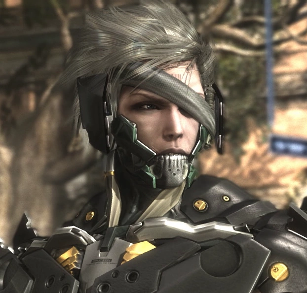
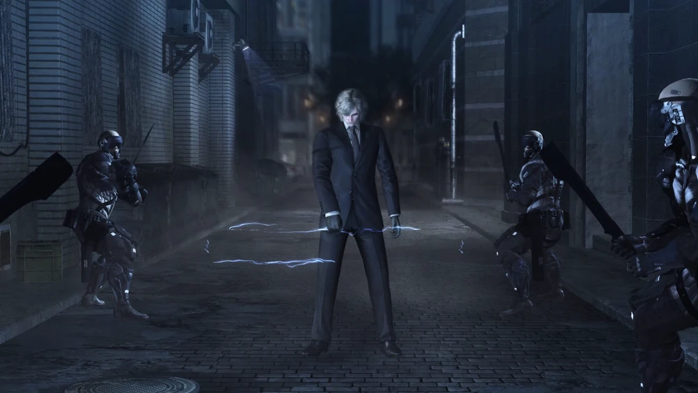
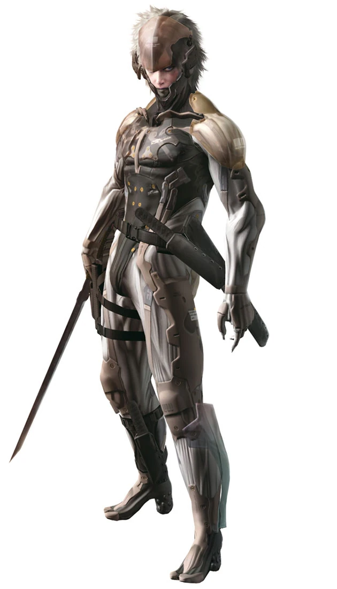

Metal Gear Wiki
Raiden
by Horrorscoil • Aug 4, 2018
"I’ll pick my own name... and my own life...I'll find something worth passing on" ―Raiden
Raiden (雷電?), real name Jack, also known as Jack the Ripper, White Devil, and Snake, was a Liberian-American mercenary and former special forces soldier. Previously a child soldier under Solidus Snake, Raiden was later selected by the Patriots to test the S3 Plan at the Big Shell, as a new recruit to the reformed FOXHOUND unit. He later worked alongside the Paradise Lost Army in their anti-Patriot activities, but was captured and forced to undergo heavy cybernetic experimentation. After successfully escaping, Raiden went on to assist Solid Snake during the Guns of the Patriots Incident.
By 2018, Raiden had become a member of Maverick Security Consulting, Inc., doing multiple tasks while raising money for his family. However, during an escort mission in Africa they were attacked by Desperado Enforcement LLC., who killed Raiden's protectee, N'mani, and left Raiden for dead. Fortunately, he was saved by the scientist Wilhelm Voigt and worked with Maverick to fight Desperado. Raiden's vengeful obsession with Desperado became personal when he discovered during a mission in Mexico that Desperado and World Marshal Inc. had kidnapped several children, surgically removed their brains to place into cybernetic bodies, and were planning to subject them to VR training modeled after his own. Raiden then resigned from Maverick to pursue and retrieve the children's brain cases from World Marshal in Colorado.
Names
The word "Raiden" (雷電?) literally means "thunder and lightning" or "thunder god" in Japanese. He shares this codename with the Mitsubishi J2M Raiden, an Imperial Japanese WWII fighter aircraft, which the Allied forces codenamed "Jack." The Patriots had named him after the plane[24] and later informed Raiden that, like his namesake, he was nothing more than a weapon, a tool to be discarded once its usefulness has been outlived. This codename stayed with him after the Manhattan incident until the Patriots' fall.
One of Raiden's nicknames was White Devil. The nickname's use in this case was a reference to Caucasians (Raiden's ethnicity) being unusual in Liberia at the time of the Liberian Civil War.
Another nickname of his was "Jack the Ripper," a pseudonym for an unidentified serial killer in 1888 who was active in the largely impoverished districts in and around Whitechapel, London. In this case, it was a reference to his skill and cruelty with a blade, a trait that was ingrained into him by Solidus.
While operating as a private security consultant in Africa, Raiden worked with prime minister N'mani, who jokingly addressed him as "Mr. Lightning Bolt," in reference to his original code name.
During his battle with Stephen Armstrong, the senator called Raiden "Saucy Jack," which was the pen-name supposedly used by the original Jack the Ripper to London police at Scotland Yard after committing his second murder and onward.
Unconfirmed history
During his childhood in Liberia, Jack, on his tenth birthday, was ordered by Solidus Snake to decapitate ten captured Liberian terrorists responsible for killing Americans (each one representing a year in his life at the time) as the latter's "birthday present" for the former.[33]
At some point between his meeting with Rose and his participation in the Big Shell Incident, Rose had informed Raiden that he physically resembled the British singer/actor David Bowie from the latter's youth due to his androgynous features.[34]
Around the time Emma Emmerich's worm cluster was starting to affect GW, after the Colonel insinuated that Rosemary had cheated on Raiden with another man the Saturday before the mission, Raiden privately angrily denied it to be the case, but then started to doubt whether he knew her as well as he did.
Raiden's surgery following the events of Liquid Ocelot's Insurrection, where he was reunited with Rose and first met Little John, took place in a hospital in Maryland.[35]